lokaler Ring und invertierbarkeit der Summe
1. Satz
Sei  ein kommutativer Ring.
TFAE:
ein kommutativer Ring.
TFAE:
- ist ein lokaler Ring
- ist eine abelsche Untergruppe
2. Beweis
2.1. a)
Seien 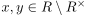 so gilt
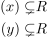
1
Ferner gilt auch 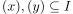, da sonst eine geeignete Erweiterung 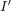 von 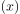 existiert, so dass  ein maximales Ideal ist (vgl. Existenz eines maximalen Ideals)
Analog für
ein maximales Ideal ist (vgl. Existenz eines maximalen Ideals)
Analog für  .
Aus der additiven Abgeschlossenheit folgt 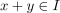 und aus 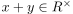 folgt ein Widerspruch, vgl. von einer Einheit erzeugtes Ideal und triviales Ideal)
.
Aus der additiven Abgeschlossenheit folgt 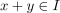 und aus 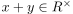 folgt ein Widerspruch, vgl. von einer Einheit erzeugtes Ideal und triviales Ideal)
2.2. b)
Wir zeigen, dass 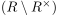 ein Ideal ist: Ferner ist dieses nicht der ganze Ring (vgl. von einer Einheit erzeugtes Ideal und triviales Ideal) Nach dem Kriterium für ein Ideal bei einem kommutativen Ring zeigen wir
2.2.1. nichtleer
folgt aus 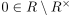
2.2.2. abgeschlossen gegenüber addition
folgt nach Annahme
2.2.3. abgeschlossen gegenüber Multiplikation
2.2.4. maximal
Sei ein maximales Ideal, so folgt für 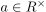 auch 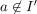. Damit gilt 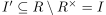, d.h. es gilt 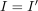